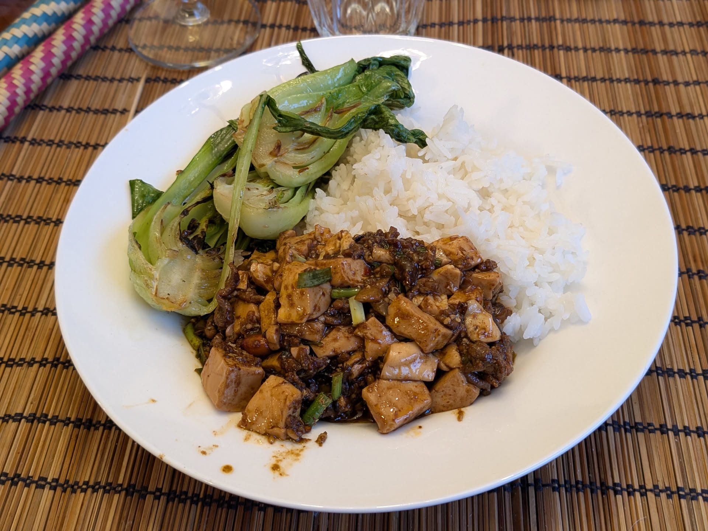

Mapo tofu

Pour 4 personnes :
- Une cuillère à soupe de poivre du Sichuan
- 700g de tofu soyeux, idéalement ferme
- 100g de bœuf haché
- 60mL d'huile végétale
- Une cuillère à café de fécule de maïs
- Deux cuillères à café d'eau
- Trois gousses d'ail
- Un pouce de gingembre
- (Facultatif) 40g de yacai ou de zhacai (de la plante de moutarde de Chine fermentée)
- Deux oignons frais (fins de préférence, on veut plus de vert que de blanc)
- Deux cuillères à soupe de sauce de haricot noir fermenté et pimenté
- Deux cuillères à soupe de vin de Shaoxing
- Une cuillère à soupe de sauce de soja foncée
- 60mL de bouillon de poulet
- Deux cuillères à soupe d'huile de piment rôti
- Enlever toutes les graines noires du poivre du Sichuan, ainsi que les graines qui ne sont pas ouvertes, il faut qu'il ne reste que l'enveloppe. Réserver en deux portions égales.
- Couper le vert des oignons frais en tronçons assez longs (1-2cm). En réserver la moitié avec l'huile pimentée, et l'autre moitié sans.
- Émincer le blanc des oignons frais, éplucher et râper l'ail et le gingembre à la microplane, émincer le yacai, réserver le tout ensemble.
- Couper délicatement le tofu en cubes d'un peu plus d'un centimètre.
- Mélanger ensemble la sauce de haricot noir, le vin, la sauce soja, et le bouillon.
- Mélanger ensemble la fécule de maïs et l'eau.
- Faire chauffer la moitié du poivre du Sichuan au fond d'un wok jusqu'à ce que ça commence à sentir bon et fumer légèrement. Le réduire en poudre avec un mortier et pilon.
- Verser le reste du poivre de Sichuan dans un wok avec l'huile et faire chauffer à feu moyen jusqu'à ce que ça commence à crépiter un peu. Enlever le poivre et garder l'huile dans le wok.
- Mettre de l'eau à chauffer dans une casserole à feu fort et quand ça bout, y verser délicatement les cubes de tofu et faire cuire une minute. Égoutter dans une passoire.
- Préparer autour du wok les ingrédients dans l'ordre : bœuf, ail/gingembre/oignons, sauce, fécule de maïs & eau, tofu, huile pimentée & vert des oignons frais, poivre de Sichuan en poudre, reste des oignons frais.
- Faire chauffer le wok à feu fort jusqu'à ce que l'huile commence à fumer. Ajouter dans l'ordre, en mélangeant en continu le bœuf (une minute environ), le mélange ail/gingembre/oignons (10-20 secondes max), sauce (pour la porter à ébullition), fécule de maïs & eau (jusqu'à ce que la sauce s'épaississe, 30 secondes environ), le tofu (en répartissant la sauce autour, délicatement pour ne pas que les cubes perdent leur forme), l'huile pimentée avec la moitié des oignons verts (30 secondes environ).
- Transférer dans un gros bol pour servir, parsemer du poivre de Sichuan en poudre et du reste des oignons frais. Servir immédiatement avec du riz.
Remarque : les quantités de poivre du Sichuan et de donnent une recette bien épicée (typiquement un peu trop pour des palais occidentaux). On peut facilement divisier la quantité de poivre de Sichuan et d'huile pimentée par deux, voire plus (mais il faut quand même qu'on sente les deux, sinon ça n'est vraiment plus dans l'esprit de la recette originale).